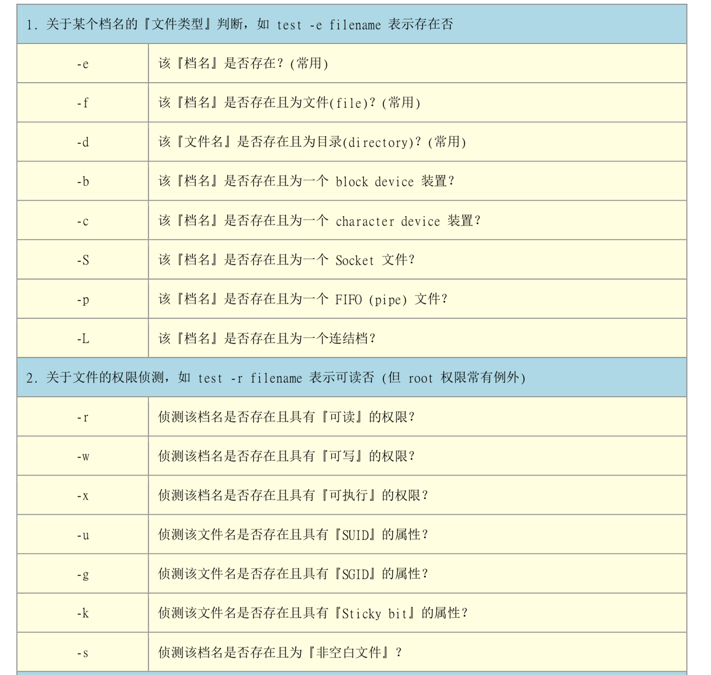
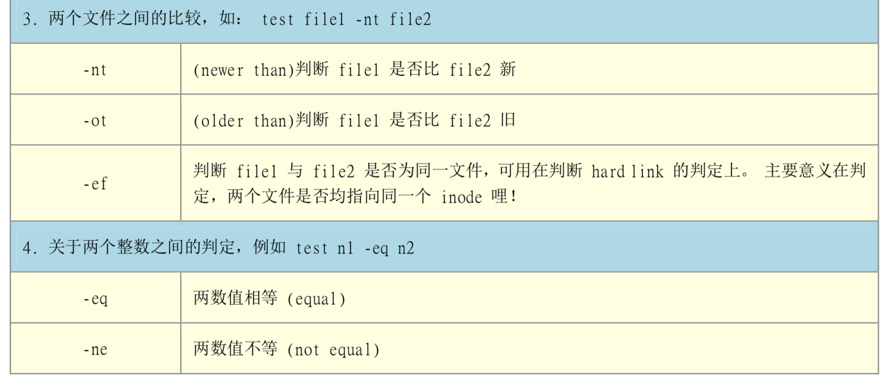
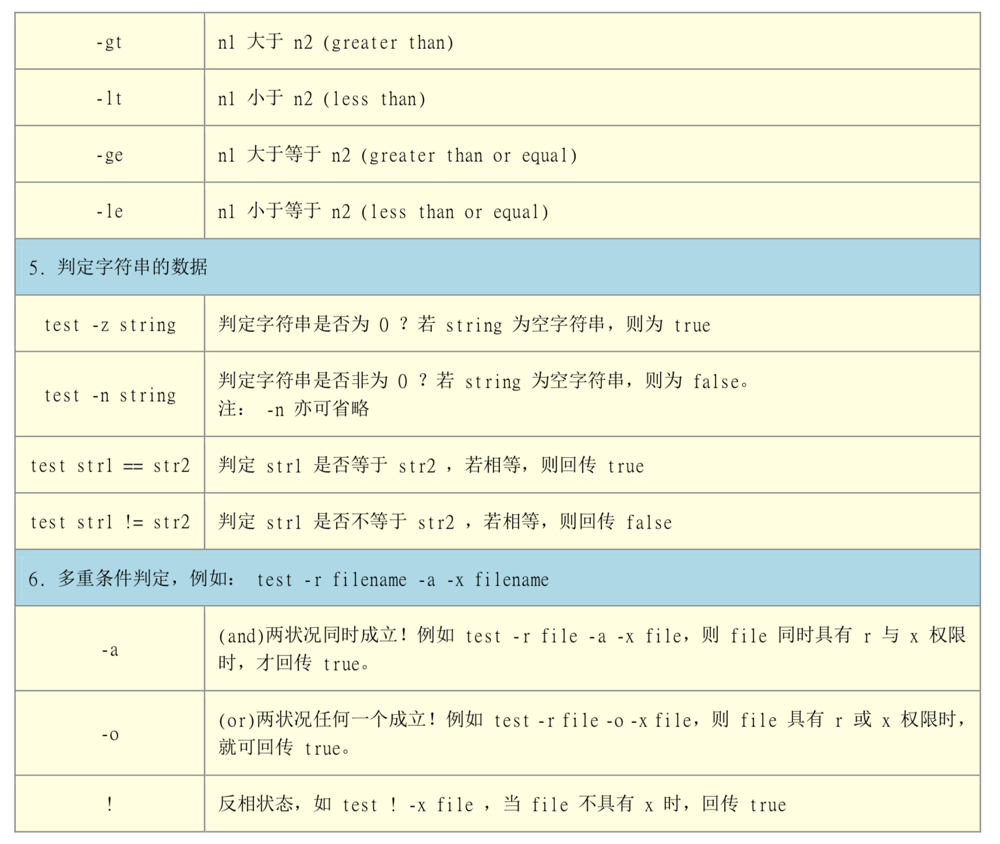

记录一下bash编程相关的知识，方便下次忘了可以来查查
来源
- 《鸟哥的Linux私房菜》
- 实验楼：高级 bash 脚本编程指南
变量基础
变量
1 | # 清理指定的文件 |
静态变量
使用关键词 readonly
1 | MY_URL="http://www.shiyanlou.com" |
小括号
1 | a=123 |
中括号
1 | a=5 |
详细的 test 判别符号见下
花括号
1 | if [ ! -w 't.txt' ]; then |
竖线
管道
1 | # 将输入的值全部大写 |
三元表达式
1 | a=10 |
破折号
案例：压缩文件
1 | BACKUPFILE=backup-$(date +%m-%d-%Y) |
特殊符号
1 | echo "传入参数的数量: ${#}" |
计算数学表达式
1 | echo `expr 2 + 3` |
判断
if
1 |
|
elif
1 | a=10 |
case
1 |
|
test



循环
for 循环
1 | for item in `seq 2 2 10`; do |
打印输入的参数
1 |
|
常见的 for 循环
1 |
|
while 循环
1 | int=1 |
无限循环
1 | while : ; do |
函数
1 | domeFun(){ |